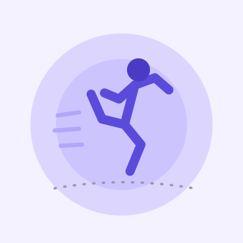

Family first
My best days are spent with my beautiful wife and wonderful kids — running outdoors, training together, and enjoying a good movie or book.
A few pages for some of the people who matter most:
Husband · Dad · Runner · Reader
Welcome to my little corner of the web. I’m a husband and dad, a marathon runner, a Tae Kwon Do black belt (right alongside my kids), an avid reader and a big believer in getting a little better every day. By day I build software at CarMax.

My best days are spent with my beautiful wife and wonderful kids — running outdoors, training together, and enjoying a good movie or book.
A few pages for some of the people who matter most:
I’m an avid runner, and running has given me some of my favorite memories — including meeting my wife. I have:

Tae Kwon Do has been one of our family’s longest-running commitments. My kids and I have trained together for years, and every one of us has earned a black belt along the way.
Getting there wasn’t quick or easy — it took years of consistent practice, showing up on the hard days, and pushing through plateaus together. That shared effort is what made it worthwhile: we didn’t just get a belt, we built a habit of discipline and perseverance as a family, and we keep training together to this day.
I’m a big believer in constant improvement. Learning is a habit that pays exponential dividends over time. The older I get, the less free time I seem to have, so I’m always curating the books, podcasts and articles that make the most of it — from leadership and psychology to a good Jack Reacher or Thursday Murder Club story.
Personal finance is an important part of any adult’s life, especially for those of us with kids and families depending on us. The basics are pretty simple, but not very well understood — we spend more time researching our next TV than our investment options.
I share more on my little investing site: prudentheed.com ↗
Professionally, I’m a software engineer and architect at CarMax, building applications and APIs on cloud technologies. Part of the fun is that there’s always room to keep improving and learning (like life).
What I’ve been reading and listening to, with notes and ratings.
Open →A searchable collection of quotes I keep coming back to.
Open →Work out the pace you need for your next 5K to marathon.
Open →A little perspective: countdowns to year-end, retirement and beyond.
Open →Myers-Briggs and the 5 Love Languages — free and private.
Open →Six letters, four words, beat the clock. A quick game I built.
Open →